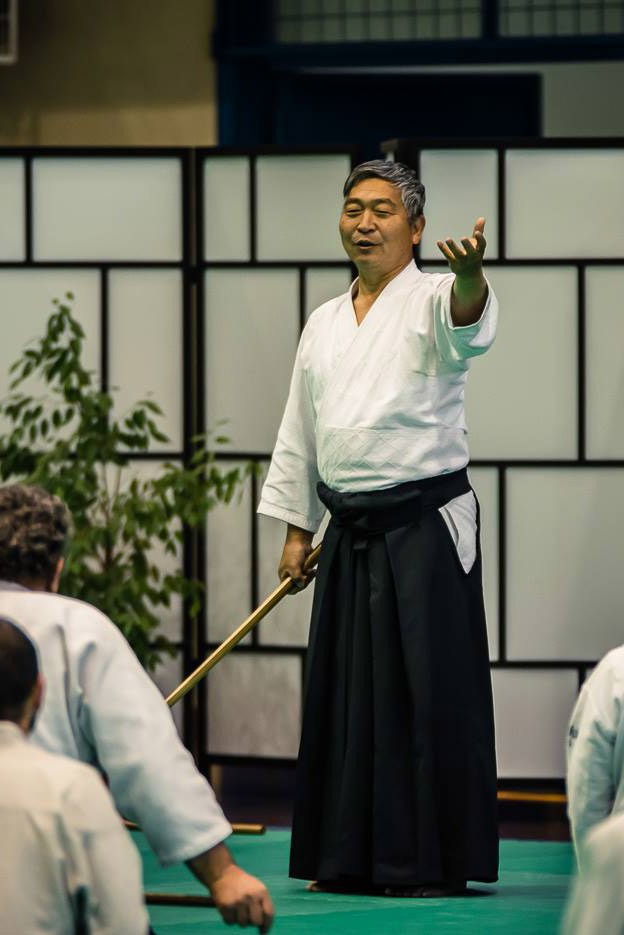

Entrenamiento Ki
Artículos escritos por: Doshu Kenjiro Yoshigasaki

1.- La fuerza del silencio
El silencio fortalece tu cuerpo. Sin embargo, se debe comprender la diferencia entre la terapia y la práctica de Ki. Cuando tienes un problema, tienes muchos pensamientos y emociones que perturban y dañan tu cuerpo. En ese caso, hablar sobre sus problemas relaja su cuerpo y deja de dañarlo a pesar de que hablar debilita su cuerpo. Es la base de toda medicina y fisioterapia / psicoterapia. Esto debilita tu cuerpo pero te ayuda a deshacerte de un daño mayor. Un ejemplo típico es la quimioterapia contra el cáncer, pero todas las terapias y tratamientos debilitan el cuerpo, algunos un poco y otros mucho.
El entrenamiento de Ki no es una terapia en el sentido de que la primera prioridad es mantener su cuerpo lo más fuerte posible. Entonces nunca hablas de tus problemas. El silencio fortalece tu cuerpo. Pero es posible que los pensamientos y emociones puedan dañar su cuerpo, por lo que debe tener una mentalidad de entrenamiento para fortalecerse al garantizar las dificultades.
Naturalmente, debes tener una mente fuerte para eso. Yamoka Tessyu fué un samurai y una especie de último maestro zen. Después de él, no es seguro que un verdadero maestro Zen apareciera en Japón. Tenía un hijo, pero no hizo que su hijo practicara zen diciendo que su hijo no es lo suficientemente fuerte. En cambio, le encontró un trabajo de jardinero del Jardín imperial en Tokio. Cualquier entrenamiento requiere cierta fuerza de la mente y el cuerpo. Estoy inventando métodos de entrenamiento que requieren fuerza mínima, pero no debes olvidar que siempre necesitas cierta fuerza para entrenarte a ti mismo. Cómo se puede evitar que sus pensamientos y emociones dañen el cuerpo. Observando tu cuerpo.
25 de marzo de 2020
Texto escrito por Doshu Kenjiro Yoshigasaki
Texto traducido por Sensei Norberto Kiman
Conferencia original en Inglés Toitsu.dk - Ki Training
2.- No se exprese usted mismo pero comunique.
La mayoría de las personas solo piensan en expresarse hacia otras personas. En ese caso, la expresión no crea comunicación. Esa es la diferencia entre los humanos y los animales. Los animales se comportan basados en el instinto, pero los humanos actúan basados en la imaginación y la educación. Los lenguajes animales están hechos para la comunicación y por eso son parte del instinto.
Los lenguajes humanos son desarrollados como una vía de expresión y por eso tienen que ser aprendidas de los padres. Los humanos desarrollan su imaginación a través de aprender lenguajes y por eso tienen que aprender un lenguaje correcto para comunicarse con otros. Este es el primer paso en la educación.
Después de la educación escolar uno debería continuar el desarrollo de la imaginación y el lenguaje. Uno necesita definir el significado de cada palabra que usa y también crear una palabra o definición nueva para desarrollar su imaginación. Por eso uno tiene el derecho de definir la palabra que usa y eventualmente crear una palabra nueva. Dado que los humanos tienen imaginación, uno debería aprender a expresarse dentro de uno mismo, sin expresarse hacia afuera.
25 de marzo de 2020
Texto escrito por Doshu Kenjiro Yoshigasaki
Texto traducido por Sensei Norberto Kiman
Conferencia original en Inglés Toitsu.dk - Ki Training
3.- Objetivo y Subjetivo
Hay una idea que usted tiene que entender para ser objetivo. Esta es una idea muy Europea y por ejemplo en Japón nadie le dá importancia a esto. Yo supongo que esto es porque el Cristianismo controlaba todo en Europa y por eso las personas usaban la ciencia para pelear en su contra. La ciencia se basó en la objetividad. Dado que en Japón no hubo dominación de la religión, las personas no tenían que pelear contra la religión y por eso no están interesados en ser objetivos. Yo pienso que las personas en Europa deberían aprender a ser subjetivas. Ser subjetivo no debe significar ser emocional o limitado de mente. Yo te veo. Yo soy un sujeto y tu eres un objeto. Por eso, si yo quiero entenderte, yo tengo que ser objetivo y tengo que ser subjetivo para entenderme a mi mismo.
"Mente flexible" es un concepto del mundo objetivo, básicamente de la psicología. Si veo una piedra y un algodón, yo puedo ver que la piedra es dura y el algodón es blando. Pero una piedra no sabe que es dura. El algodón no sabe que es blando. Yo no sé si mi mente es flexible o rígida, pero yo puedo ver si tu mente es flexible o no. "Libertad" es también un concepto del mundo objetivo. La mayoría de los Europeos piensan que Europa es libre. Los Estadounidenses piensan que Estados Unidos es un país libre.
Si usted piensa y vive igual que todo el mundo, entonces piensa que es libre porque no encuentra ningún conflicto. Pero una vez que comienza a pensar en forma diferente o vivir en forma diferente, comenzará a encontrar muchos obstáculos tanto en Europa como en Estados Unidos y usted dirá que ahí no hay libertad. Mientras no haya conflicto u obstáculo, usted no sabe si es libre o no. Cuando se vive sin ningún conflicto dentro de su mente y cuerpo, usted no sabe si es libre o no. Lo mismo con respecto al mundo, usted siempre trata de entender el mundo y vivir dentro de él, por eso no hay un conflicto mental en su vida y en ese caso el término "mente libre" no tiene sentido. Cuando usted se ve a usted mismo, no hay conflicto. Eso es todo. Eso es ser subjetivo.
13 de Abril de 2020
Texto escrito por Doshu Kenjiro Yoshigasaki
Texto traducido por Sensei Norberto Kiman
Conferencia original en Inglés Toitsu.dk - Ki Training
4.- Respiración Ki y el diafragma
Objetivamente, el abdomen esta siempre trabajando como cualquier otra parte del cuerpo. La cuestión del Entrenamiento Ki es como usar la percepción subjetiva para desarrollarse uno mismo. Al principio siempre enseño la respiración abdominal, donde usted se acuesta boca arriba y respira profundamente moviendo su abdomen arriba y abajo sin mover su pecho. Cuando uno se acuesta sobre su espalda, la respiración abdominal es correcta. Por eso es que los doctores que tratan con enfermos acostados en una cama, ven solo la respiración abdominal. Después que usted puede mover bien su diafragma moviendo su abdomen arriba y abajo, debe practicar la respiración estando parado.
Cuando está parado, los músculos del abdomen deben ser usados para mantener la postura o para mantener un movimiento del cuerpo correcto. Por eso, deber aprender a mover su diafragma independientemente del movimiento de su abdomen. Básicamente el abdomen no se mueve mientras está parado o mueve sus piernas. Eso es por lo que debe practicar respiración sin mover su abdomen. Si uno no usa los músculos del abdomen, no puede controlar su diafragma a través de esos músculos. Por eso usted controla su diafragma inhalando y exhalando en relación con el movimiento del pecho. Esa es la forma standard de la práctica de Respiración Ki. Usted debería ser capaz de controlar su diafragma sin mover su abdomen. Por supuesto los músculos del abdomen están trabajando pero deben trabajar sin un control consciente.
El conocimiento básico es que usted no puede controlar su diafragma directamente, sino que debe aprender a controlarlo indirectamente. Después que practique bien la Respiración Ki su diafragma trabaja bien. Entonces uno hace nada y le permite trabajar armoniosamente. Entonces usted es incapaz de percibir su respiración porque el movimiento de su diafragma es muy calmo. Esto es la No Respiración y es buena porque de ese modo uno puede percibirse mejor a uno mismo.
22 de Abril de 2020
Texto escrito por Doshu Kenjiro Yoshigasaki
Texto traducido por Sensei Norberto Kiman
Conferencia original en Inglés Toitsu.dk - Ki Training
5.- Ver los pensamientos y el cuerpo
Ver los pensamientos es diferente de pensar. Entender la diferencia es el primer paso para ver los pensamientos. La mayoría de las personas piensan y no ven sus pensamientos. Ver es diferente de observar. Ver significa que usted no elige lo que ve. Observar significa que usted elige lo que ve. En Ingles la palabra "seeing" significa ver sin opción, mientras que la palabra "looking" significa mirar o sea ver con opción. Por eso usted debe ver y no mirar ni observar. La ciencia está basada en la observación. Eso es por lo que la gente joven que obtuvo una educación basada en la ciencia, no entienden el significado de "ver".
Ver no tiene opción, esto significa que si usted ve los pensamientos o el cuerpo, los está viendo todo el tiempo. Raramente pasó que la sociedad humana (desde tiempos remotos) haya visto este fenómeno de ver los pensamientos o el cuerpo. Ver los pensamientos normalmente sucede entre los 5 y los 15 años. En el Tíbet está la tradición del Dalai Lama donde se elige al futuro Dalai Lama entre los chicos. En realidad ellos están buscando un chico que pueda ver pensamientos. No es seguro que ellos puedan encontrarlo debido a que no tienen una práctica o entrenamiento para hacer que esto suceda. Ver el cuerpo puede pasar entre los 25 a 35 años de edad con algún tipo de entrenamiento, como por ejemplo el Entrenamiento Zen. Aún si usted entrena Zen, solo uno entre miles será capaz de ver el cuerpo. A ese ver el cuerpo se lo llama "Satori".
Ninguno de ustedes será capaz de ver sus pensamientos o su cuerpo. Eso es por lo que yo no estoy tratando de hacerles lograr algo. No hay logro y no se espera algo de ustedes. Usted no debería intentar o querer lograr algo. Entonces, porque estoy hablando acerca de ver los pensamientos y el cuerpo ? Esto es porque Ikkyu, quien creó la base de la cultura Japonesa pudo ver los pensamientos y el cuerpo. Yo tengo que explicar el ver los pensamientos y el cuerpo para explicar la cultura Japonesa y el Aikido.
Aunque ninguno de ustedes verá los pensamientos o el cuerpo, es posible para todos observar sus pensamientos o su cuerpo como una práctica. Eso es el Entrenamiento Ki y esto los ayudará a crear su vida y el mundo. Dado que ustedes solo observan o miran sus pensamientos o su cuerpo ocasionalmente, ustedes viven a través de su psique y practicando vivirán con algo de libertad e independencia de ella. Ojalá que con este Entrenamiento ustedes sufran menos de sus problemas psicológicos. Pero si ustedes no tienen este tipo de problemas psicológicos, observar o mirar sus pensamientos y el cuerpo les dará más inteligencia y mejor salud. Por eso no es importante si sus pensamientos o psique desaparecen o no. Yo solo les explico lo que le puede pasar a sus pensamientos o psique mientras practican. Cuando usted practica, usted trata de observar sus pensamientos o su cuerpo, ya que no se pueden ver sus pensamientos y su cuerpo al mismo tiempo. Cuando no está haciendo actividades físicas difíciles, entonces usted puede ver sus pensamientos. Luego, cuando ve su cuerpo, usted no esta viendo dentro de su cuerpo sino viendo ambos, dentro y fuera de su cuerpo. Si usted está haciendo Aikido con Uke, usted tiene que ver el espacio completo el cual incluye ambos, a usted y a Uke.
El propósito del Entrenamiento Ki es entenderse a uno mismo y al mundo. Simplemente no hable y observe sus propios pensamientos, sentimientos y emociones. En otras palabras, escúchese. Debe escuchar la "charla de su mente" porque ese es el real usted sin pretensión o hipocresía. Mientras llame a esto "ruido interno", estará negándose a aceptarse tal como es. Debe enfrentarse a sí mismo. Cuando escuche la "charla en su mente" y se entienda completamente a usted mismo y lo acepte, estará en silencio.
Abril de 2020
Texto escrito por Doshu Kenjiro Yoshigasaki
Texto traducido y compilado por Sensei Norberto Kiman
Conferencia original en Inglés Toitsu.dk - Ki Training
6.- Libertad y Consciencia
La libertad no es ser libre de algo. Este es un error básico que casi todos cometen. La mente pensante siempre controla su cuerpo. Si usted ve sus pensamientos y su cuerpo, su mente pensante desaparece y así esta no controla su cuerpo. Eso es por lo que ver sus pensamientos y su cuerpo es la práctica básica para la libertad. Ver los pensamientos y el cuerpo debería pasar todo el tiempo.
Usted tiene que entenderse a usted mismo lo cual significa entender su imaginación. La imaginación está debajo de los pensamientos. Uno no puede percibir nada debajo de la imaginación. Dado que usted es inconsciente de su imaginación, tiene que practicar ver sus pensamientos y su cuerpo. Con Psicología o Meditación usted puede querer controlarse a sí mismo, pero entonces usted no está libre. En cambio si solo actúa correctamente en cada momento de su vida, ahí no habrá control.
Consciencia es un concepto psicológico y éste es inútil en su vida. Usted no debería tratar de ser consciente de algo. Otra vez es una idea equivocada de la que muchos profesores de meditación están hablando. No use la consciencia para su vida. Usted puede usar el concepto de consciencia para entender a otros pero no para entenderse a usted mismo.
La única libertad es ver su imaginación y su cuerpo. No hay otra cosa. Por eso solo practique ver sus pensamientos y su cuerpo hasta que pueda ver su imaginación. Si usted realmente entiende, su vida cambiará y eso cambiará al mundo.
Abril de 2020
Texto escrito por Doshu Kenjiro Yoshigasaki
Texto traducido y compilado por Sensei Norberto Kiman
Conferencia original en Inglés Toitsu.dk - Ki Training
7.- Comunicación y Expresión
Comunicar significa hacer que otros imaginen lo que usted imagina. Expresar significa hacer algo de tal modo que otros lo puedan percibir. Entonces, si usted está expresándose sin elegir lo que expresa, usted no está comunicando. Los animales y los bebés se expresan y no comunican. Sin embargo, los animales se expresan desde su instinto y así la expresión se vuelve comunicación. Los humanos adultos deben aprender cómo comunicar, porque la expresión humana no está basada en el instinto. Es una pena que muchos adultos no están bien educados y no sean capaces de comunicar y solo se expresan.
Comunicar significa expresar solo lo que es necesario para hacer que otros imaginen lo que usted quiere que ellos imaginen. Por eso no hay garantía que usted tenga éxito en comunicar o no. Pero al menos usted puede tratar de comunicar y esto va a depender de la forma en que usted se exprese. Un actor de teatro debe comunicar a la audiencia y por eso debe solo expresar lo que es necesario para tal propósito. Cuando usted se expresa, está eligiendo lo que le gusta expresar y no lo que es necesario expresar. Por eso la diferencia es, si usted hace lo que quiere o lo que debe hacer. Esta es la diferencia básica entre los chicos y los adultos. Los chicos hacen lo que ellos quieren y los adultos son capaces de hacer lo que ellos deben hacer. Ahora, si usted es adulto, la pregunta es si puede disfrutar de hacer lo que debe hacer. Usted disfruta su vida si es capaz de disfrutar lo que debe hacer.
Cuando trata de resolver un problema hablándole directamente a otra persona, no está expresando su problema sino realizando una sugerencia o explicación la cual eventualmente crea la solución. En ese caso su cuerpo no cambia. La fuerza del cuerpo no puede ser medida porque está siempre cambiando. Eso es por lo que la ciencia y la psicología no entienden la mente. Así el cuerpo se está volviendo más fuerte o más débil a cada momento. Cuando usted está en silencio, su cuerpo está trabajando en la perturbación de adentro y así está fuerte. En el momento que usted expresa sus problemas, su cuerpo se detiene de trabajar en la perturbación, por eso su acción se está volviendo más débil. De algún modo el cuerpo detiene ese estar fuerte cuando usted comienza a hablar acerca de lo que su cuerpo está trabajando. Es similar a cualquier actividad física. Si usted comienza a hablar mientras hace algo, su actividad física se vuelve más débil. Cuando usted quiere trabajar realmente duro, no tiene que hablar.
Esto significa que usted no debería hablar acerca de sus problemas sino tratar de encontrar una solución y eventualmente hablar acerca de la solución del problema. La idea es no hablar y observar sus propios pensamientos, sentimientos y emociones. En otras palabras, escucharse a uno mismo.
Abril de 2020
Texto escrito por Doshu Kenjiro Yoshigasaki
Texto compilado y traducido por Sensei Norberto Kiman
Conferencia original en Inglés Toitsu.dk - Ki Training
8.- Entrenamiento Ki en la vida diaria
Yo estoy explicando lo que es el Entrenamiento Ki. Entrenamiento es esencialmente desarrollarse uno mismo. En la vida diaria también es bueno pedir ayuda de otros. Es evidente que los seres humanos deben ayudarse unos a otros para sobrevivir. Las plantas y animales parecen ser independientes pero todos las vidas deben ayudarse unas a otras para vivir. Por eso, es una buena idea tener un buen amigo con quien hablar acerca de un problema. Sin embargo, muchas personas dependen de otro y olvidan levantarse solos y algunas veces esto es necesario en la propia vida. Eso es por lo que estoy proponiendo el Entrenamiento Ki y también el entrenamiento de Aikido. En Europa hay un viejo dicho "Dios ayuda a quienes se ayudan a sí mismo."
Si usted por ejemplo siente miedo, debe observar su cuerpo sin nombrarlo como "miedo" o alguna otra forma. Esta es una parte del Entrenamiento Ki y la introducción es el Test de Ki. Cuando un profesor le realiza un Test de Ki, usted entiende su cuerpo sin mencionar ningún sentimiento o emoción. Un Test de Ki se supone que le enseña a usted a ver su cuerpo y entenderlo sin usar nombres. Si usted ve su cuerpo sin nombrar nada, será capaz de percibir una perturbación en su cuerpo como un doctor puede ver una perturbación usando una máquina. Usted puede verla sin usar una máquina porque es su cuerpo. La diferencia es que la observación del doctor no cambia su cuerpo pero la propia observación de su cuerpo, normalmente crea armonía. y eventualmente la perturbación desaparece. Eso significa que su miedo se fue. Si usted está realmente observando su cuerpo, éste no se moverá. Eso es por lo que un Test de Ki básicamente hace que usted no mueva su cuerpo.
Otro entrenamiento para clarificar las dudas es Seizaho. Usted solo debe sentarse con una postura relajada pero correcta y tratar de ver todas sus dudas y preguntas sin tratar de tomar una decisión. Después que todas sus dudas y preguntas desaparezcan, una decisión llegará. Naturalmente eso llevará mucho tiempo. Eso es por lo que usted debe practicar diariamente antes de que se vea obligado a tomar una decisión. Si usted practica Seizaho diariamente, podrá tomar una decisión inmediatamente. Entrenar la respiración Ki lo ayudará a crear una postura correcta.
Expresarse en un ambiente determinado es llamado "actuar" y la vida es una continuación de actos. Si mejoramos nuestro actuar, la vida se vuelve un arte. La educación moderna se basa en la ciencia y la ciencia se ha desarrollado en la dirección de las armas y el dinero. Eso es por lo que la expresión de la realidad y la realidad son muy similares a la educación moderna. Así, los estudiantes se supone que entienden lo que el maestro escribe o dice. La vida es algo que no puede ser expresada con palabras. Por supuesto alguna parte de ella puede ser expresada con palabras y a esa parte se la estudia en la escuela. En Japón los maestros usaban la palabra Ki, la cual significa algo que no puede ser expresado en palabras. Ki es importante porque la parte básica de la vida no puede ser expresada en palabras. La parte más importante del universo entero no puede ser expresada en palabras. Por eso ellos hablaban del Ki del Universo.
Lo que yo escribo o digo no es importante. Yo escribo o digo para que usted pueda ver la realidad en su vida. Solo trate de practicar en su vida. Mi trabajo es hacerlo practicar. El amor es lo más importante en las relaciones humanas. Lo que la gente diga no es importante mientas el amor esté ahí. La pregunta importante es si hay amor o no. Esa es la realidad que usted tiene que ver en su vida.
Abril de 2020
Texto escrito por Doshu Kenjiro Yoshigasaki
Texto compilado y traducido por Sensei Norberto Kiman
Conferencia original en Inglés Toitsu.dk - Ki Training
9.- Juicio Final
Cuando veo TV, noto que los periodistas y políticos tratan de juzgar si lo que el gobierno hizo estuvo bien/correcto o mal/errado. Si usted trata de juzgar lo que hizo en su vida, normalmente es imposible saber si lo hizo bien o no. Por supuesto algunas veces usted cometió errores, pero no puede juzgar si lo que hizo en un cierto período de tiempo de su vida fué correcto o errado.
Los gobiernos algunas veces/a menudo cometen errores pero es imposible juzgar lo que hizo en un cierto período tal como un mes, un año, etc. Usted puede estudiar la historia del mundo y verá que es imposible juzgar diferentes gobiernos, excepto para decir que matar sin justificación está mal. Dado que casi todos los gobiernos mataron en forma innecesaria, esto no puede ser usado como juicio. Si está interesado, estudie muy seriamente la historia del mundo. La sabiduría antigua, dice que solo Dios puede juzgar y aún Dios puede juzgar solo al final del mundo. Por eso lo que deberíamos hacer es imaginar el futuro y crear el futuro todo el tiempo. Uno naturalmente imagina el pasado para imaginar el futuro.
Es muy importante entender que el pasado es también imaginación. Por supuesto, hay algunos hechos innegables en el pasado, pero nosotros estamos siempre imaginando el pasado completo integrando esos hechos. Nadie puede decir que su imaginación del pasado es absoluta o correcta. Cada uno imagina el futuro, para crear el futuro de uno mismo. Cada uno debería imaginar de modo diferente. Por eso es que es inútil discutir o consultar a otros. Usted puede solo aprender de la imaginación de otro para mejorar su imaginación, sin criticar ni juzgar a otros.
1 de Mayo de 2020
Texto escrito por Doshu Kenjiro Yoshigasaki
Texto traducido por Sensei Norberto Kiman
Conferencia original en Inglés Toitsu.dk - Ki Training
10.- Que es la relación entre las personas?
La mayoría de las relaciones entre las personas son, "Tú me entiendes y yo te entiendo."
Personalmente, en toda mi vida no encontré a nadie que me entienda. Por eso estuve siempre interesado en el mundo más que en las personas y la única relación que yo pude tener con las personas fue, "Yo entiendo al mundo y vamos a tratar de entender al mundo juntos."
Esta actitud no creó la así llamada amistad pero creó el compañerismo y la vecindad. Si usted observa el pasado de la sociedad humana, compañerismo y vecindad fueron lo más importante. Solo en los últimos 100 años en los países ricos las personas quieren solo la amistad. En la sociedad de la gente pobre el compañerismo y la vecindad son todavía lo más importante en sus vidas.
3 de Noviembre de 2020
Texto escrito por Doshu Kenjiro Yoshigasaki
Texto traducido por Sensei Norberto Kiman
Conferencia original en Inglés Toitsu.dk - Ki Training
Artículos

Bibliografía

Mirá videos de la práctica